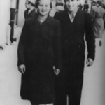

Заключенный: Лев Копелев
На допросы меня водили по ночам на второй этаж через большой зал и коридор, несколько раз круто поворачивавший. Вдоль коридора стояли шкафы, горки, этажерки, буфеты, вынесенные из разных разных комнат. Я приметил у одного из поворотов книжный шкаф с разбитой стеклянной дверью.Книги лежали навалом…Об этом шкафе я думал на протяжении всего допроса. Когда повели обратно, полусонный конвоир шел сзади. Подходя к заветному углу, я прибавил шагу, завернул, на ходу сунул руку в шкаф, выхватил сколько мог книжек, затолкал под гимнастерку за брюки…Днем я мог читать. В дверях нашей импровизированной камеры не успели пробить “волчок”, а пока щелкал ключ, снимался висячий амбарный замок и отодвигалась щеколда, я успевал зарыть книжку в соломе.”

Picture of Janusz Bardach
В этом отрывке из программы Коммон Граунд Радио Мэри Грэй Дэвидсон берет интервью с бывшим узником Гулага Янушем Бардаком о том как он выжил в Гулаге. Полная версия интервью, записанного 12-го сентября 1998 года, доступна по адресу http://commongroundradio.org/1998.shtml.
ДЭВИДСОН: В 1941 году двадцатилетний Януш Бардак, которы тогда был солдатом в сталинской Красной Армии, был приговорен к смерти за предательство. Его преступление заключалось в том, что его танк застрял в грязи. Вместо казни, его отправили в самый страшный лагерь Гулага в восточной Сибири. Помимо того, что Вы были молоды, что еще Вам позволило выжить в Гулаге? Многие молодые люди погибли. Вы говорили, что было важно сохранить чувство собственного достоинства.
БАРДАК: Я думаю, чувство собственного достоинства. Я думаю, желание жить. Я хотел жить. Я не хотел умерeть. Я очень сильно хотел, я хотел жить, я хотел вернуться, я хотел вернуться к моей прежней жизни, я хотел увидеть моих родных. Я надеялся что может быть, может быть я найду кого-нибудь живого. Так что я хотел жить. Это было самое первое. Второе, я старался сохранить хоть какие-нибудь символы поведения которые мне были свойственны до ареста. Например, умываться каждое утро. Много раз когда я не мог мыться водой, я мылся снегом. Все думали что я сошел с ума, но я пошел в снег и вымылся, по крайней мере лицо. Если не было снега, я плевал на ладони и мылся.
ДЭВИДСОН: Это было символично.
БАРДАК: Да, чрезвычайно символично. Но это очень помогало. Я чувствовал себя лучше чем другие окружающие меня люди, такие же грязные и вшивые как и я. Также было желание не унизиться. Боязнь унижения. Я очень этого боялся. Я знал, что тогда я очень быстро опущюсь.
ДЭВИДСОН: Так что эта былa очень тонкая…
БАРДАК: Очень тонкая соломинка за которую я держался.
ДЭВИДСОН: Я однажды была на Вашем выступлении где Вы рассказывали о своей матери и по-видимому она Вам передала несколько полезных способов переживать некоторые самые трудные события в жизни. А именно, не она-ли дала название Вашей книги, Человек человеку волк?
БАРДАК: Да, именно так. Она всегда, она использовала, она знала много замечательных поговорок и это была одна из них, «человек человеку волк». А другая была, «мир не без добрых людей». И я никогда бы не выжил в лагере если бы не встретил добрых людей, в эти годы. Я бы никогда не выжил. То, что я встретил людей которые мне помогли, дало мне надежду, это доказало мне, что даже в таких условиях может жить человеческий дух, что что-то человеческое все равно остается.
ДЭВИДСОН: Мне очень нравятся эти две фразы. Они как бы воплощают…
БАРДАК: Именно.
ДЭВИДСОН: ... человеческий дух. Люди могут очень разочаровывать, но в то же время в мире есть добрые люди которые могут приятно удивить.
БАРДАК: Именно, именно. Так что я никогда, никогда не был пессимистом в отношении людей. Я тоже в них верю. И мне нравится среди них жить, до сих пор.